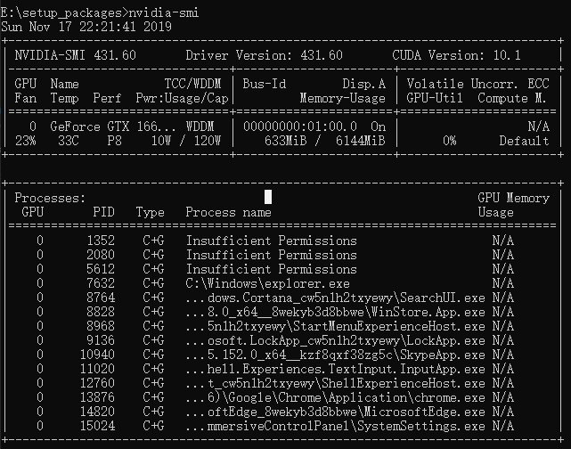

要安装GPU版pytorch并用GPU跑实验，首先你得有一块GPU。。。
也就是保证你的机器上有GPU。
本机是windows 10，所以以windows 10 的安装配置为例。
1. CUDA下载与安装
首先需要下载并安装CUDA。CUDA版本需要选择正确，否则后面各种问题，太难受了。
官网 cuda toolkit release note上有cuda版本与显卡驱动的对应关系图，如下：
那么如何查看我们机器上的显卡以及显卡驱动的信息呢？
桌面右键-打开NVIDIA控制面板-帮助-系统信息，显示信息如下：
如图所示，我们的机器上驱动程序版本是431.60，对应上面的cuda版本和显卡驱动对应图，大于418.96，我们可以选择CUDA10.1。
然后就去cuda官网选择10.1版本的cuda下载：
由于学校账号流量有限，所以用实验室的服务器下的。。wget -c 链接地址。。。
能省一点是一点。。。
下载好了之后直接安装就可以。会自动配置好环境变量。
在cmd中运行nvcc -V
出现下图则安装成功
还可以运行nvidia-smi来查看当前GPU状态：

2. cuDNN下载与安装
cuDNN版本的选择也要非常非常慎重，与CUDA对应好。
cuDNN官网安装介绍，装cuDNN前需要保证满足如下条件：
- 有至少一块算力超过3.0的GPU。查看自己显卡的算力可以去CUDA GPUs.
- cuda, cuda Driver. 同时需要参考 cuDNN Support Matrix。cuDNN版本与cuda版本和显卡驱动版本对应图：

可以看到 cuDNN v7.6.3 - v7.6.5版本支持的cuda和显卡驱动。满足我们的条件，所以我们可以选择这个版本范围内的cuDNN。
所以去cuDNN官网选择对应版本下载即可。
我们的选择如下图：
下载完成之后解压缩，将里面的文件放到cuda安装目录下的对应位置即可。(应该总共有三个文件，bin/cudnn64_7.dll, include/cudnn.h, lib/x64/cudnn.lib)
之后添加环境变量
添加环境变量：C:\Program Files\NVIDIA GPU Computing Toolkit\CUDA\v10.0\lib\x64
（是否需要添加环境变量有待考证，好像不加也没事）。
3. pytorch安装
去pytorch官网选择pytorch版本，注意平台，安装方式，python版本，以及cuda版本的选择：
这里python版本一定要对应，当时我的python刚尝试更新到3.8，然后选择安装3.6的版本，结果pip安装的时候会报错：Could not find a version satisfies the requirement torch===1.3.1……
手动下载了torch-1.3.1-cp36-cp36m-win_amd64.whl文件，然后使用pip install torch-1.3.1-cp36-cp36m-win_amd64.whl命令安装也不行，会报错：torch-1.3.1-cp36-cp36m-win_amd64.whl is not a supported wheel on this platform
只能将python版本改回3.6版本，然后直接复制官网上的pip命令，安装成功。
流量比较珍贵者，可以其他途径手动下载whl文件，然后用pip来安装。注意要选择正确的torch版本和torchvision版本。
安装完成之后，测试是否安装成功：
大功告成！